SUBJECT 0621
The Version That Remained
Interactive Audiovisual Installation · 2026
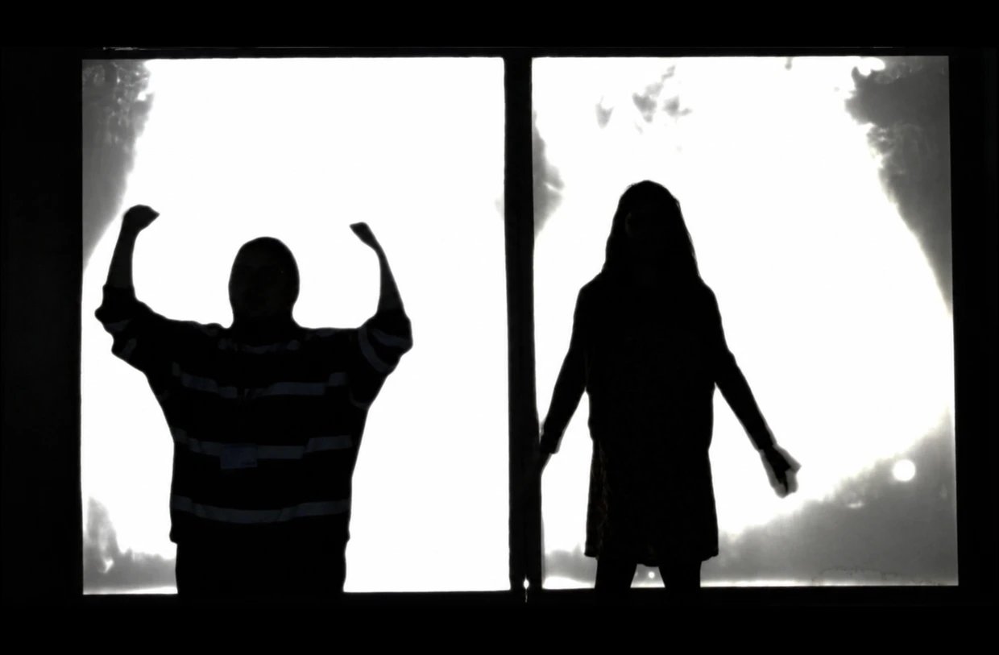
SUBJECT 0621: The Version That Remained is an interactive audiovisual installation exploring the instability of self-perception and the relationship between physical presence and mediated reality.
The work originated from an interest in the uncanny — the subtle discomfort that emerges when something familiar becomes unfamiliar. Through live video feeds, temporal delays, fragmented reflections and spatial distortions, the installation reconstructs the human body across physical and digital spaces, disrupting the expected correspondence between movement, image and time.
Rather than presenting the audience with a predetermined narrative, the work positions their bodies as both the subject and the material of the performance. The discrepancies between the physical self and its mediated representations invite a reconsideration of how we perceive, recognise and construct our own identities.
If an image of ourselves no longer corresponds to our immediate existence, which version of the self do we recognise as real?
- Role
- Concept, Spatial Design, Interactive Media Design, Sound Design & Technical Realisation
- Medium
- Live Video, Projection, Mirrors, Sound, Audience Interaction
- Research
- The Uncanny, Embodied Perception, Temporal Displacement, Mediated Identity
The image falls behind
You move, and the image moves a moment later. I used light, live cameras and projection to split the body into fragments, then introduced a delay to see what would happen when the image stopped keeping up.

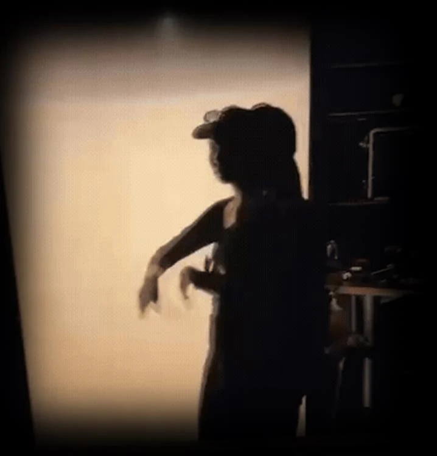

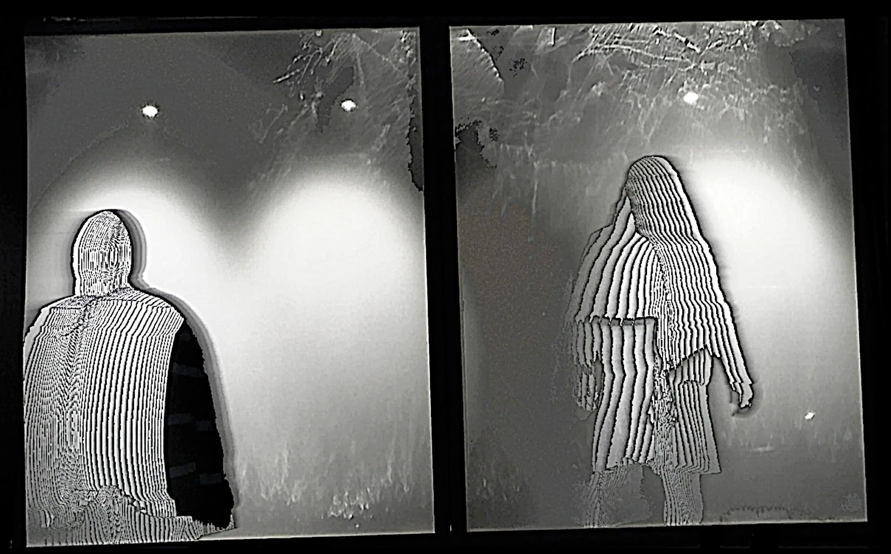
More than vision
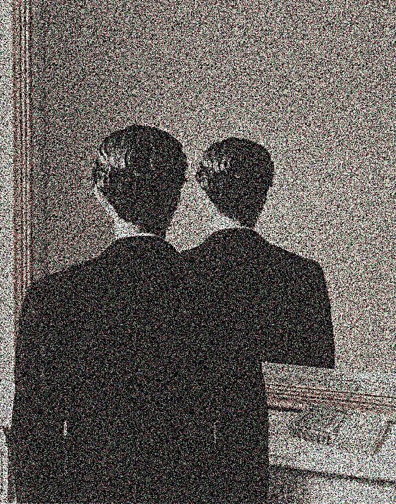
Body image is how we consciously see ourselves. I changed that image by fragmenting and delaying the projection.
Body schema is the sense of the body in action. That distinction helped me understand how a distorted image could still feel familiar as people moved.
Body image and body schema, after Shaun Gallagher (2005).
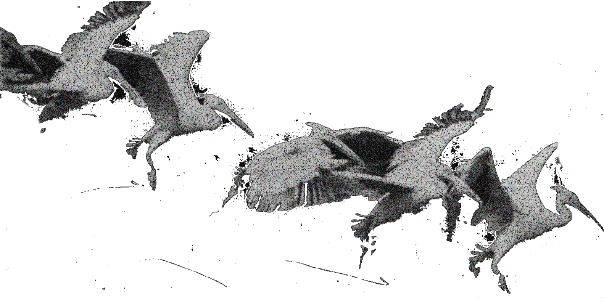
Audience response
Participants recognised themselves in the altered image very quickly. Once they understood the setup, they began to test what this version of themselves could do.
They tried a gesture, watched for its delayed return, and tried another. What I had expected to unsettle people often turned into play.

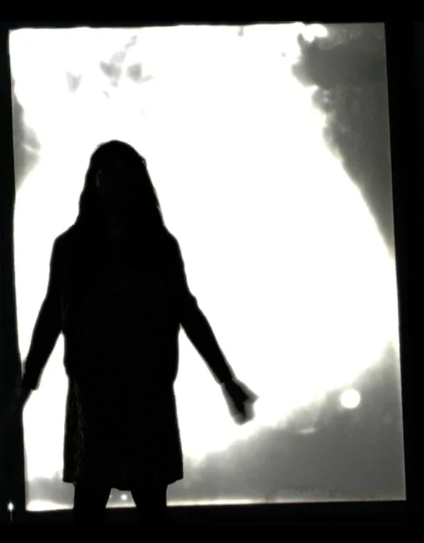

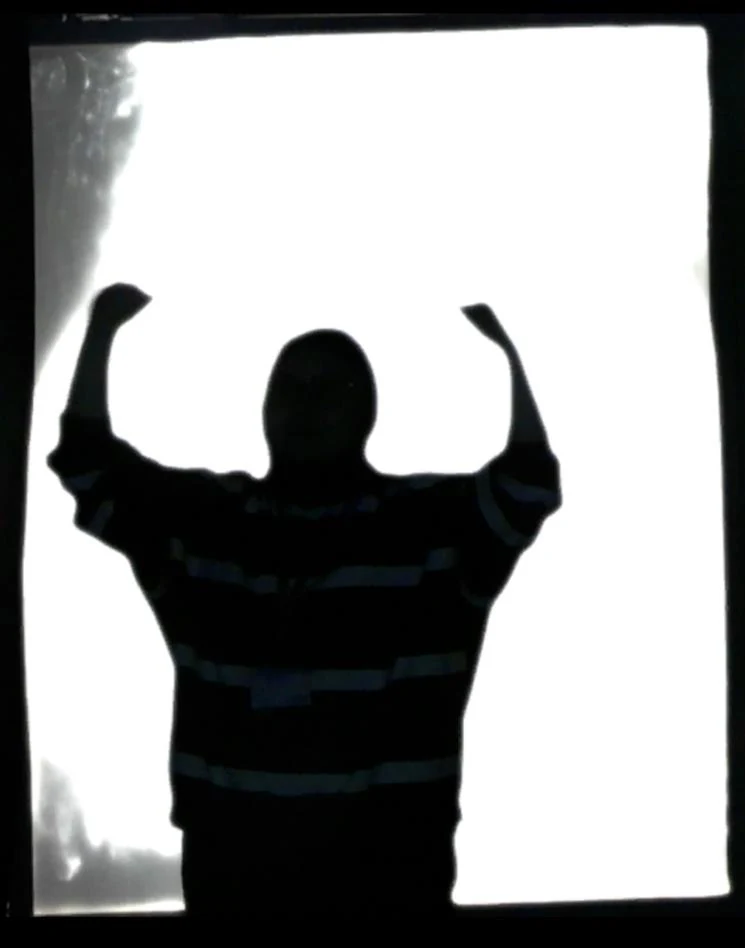
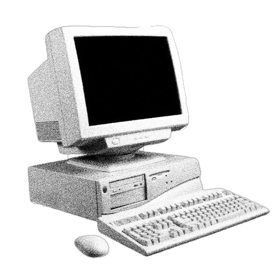
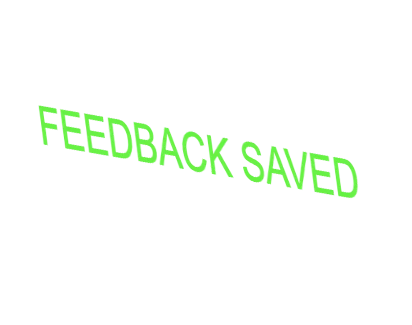
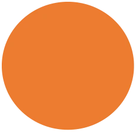
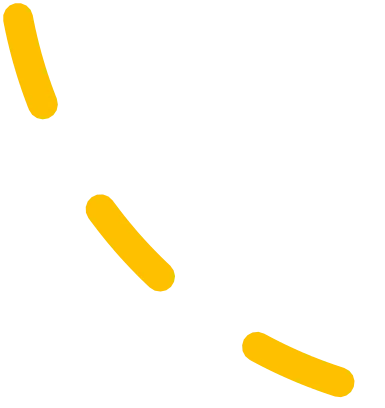
In the testing room

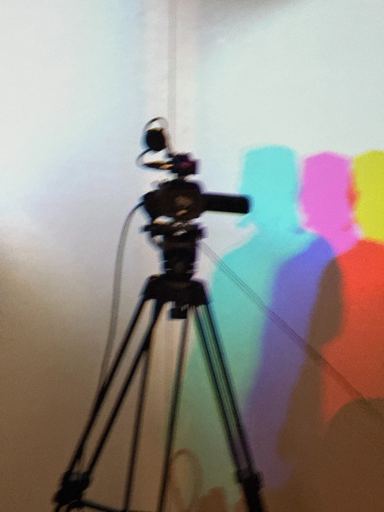

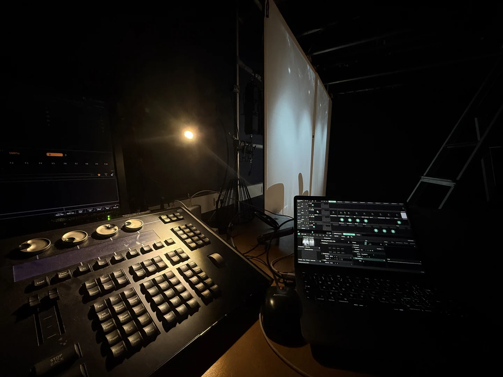